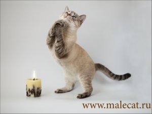
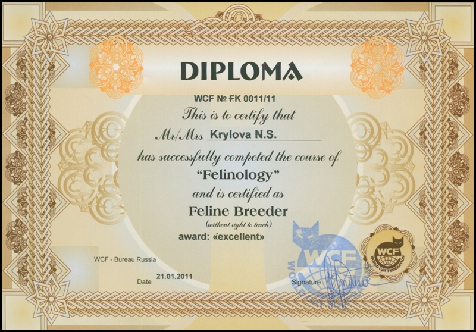

Lambent Eyes Arny. Эта фотография сделанная мною победила на одном фотоконкурсе.
Мой стаж в разведении кошек начинается с 2009 года.
Я завела своего первого кота в 2009 года, и тогда не планировала заниматься разведением.
Я хотела просто завести породистого кота и участвовать в выставках, а также попробовать вязать его с кошками. Котика звали Arny Lambent Eyes.
Arny - это само имя, а Lambent Eyes - это приставка к кличке (имя самого питомника, где он был рожден). Заводчики(питомники) часто приписывают эту приставку (своего названия) к имени животного, рожденного у них.

Мой диплом фелинолога (специалиста по кошкам)
Я прошла обучение по тематике разведения кошек, генетики окрасов и получила диплом.
На курсе фелинологов проходят в основном генетику окрасов кошек, животных каких окрасов нужно вязать (спаривать), чтобы получить определенный окрас.
Это все можно просчитать.
Сертификаты регистрации питомника
Существует нескольо так называемых выставочных систем в кошачьем мире. У каждой системы есть свои стандарты породы. Бывает так, что в одной системе одна порода признана, а в другой - нет.
Свой пиомник можно зарегистрировать в такой системе или системах. Это дает заводичку право использовать это имя в кличках животных, которые были рождены в этом питомнике.
Имя питомника MALECAT было зарегистрировано в двух системах WCF (Германия) и TICA
(США).